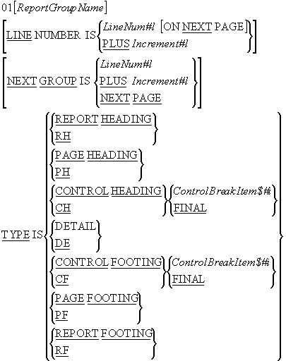
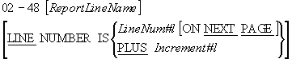

The COBOL Report Writer - Syntax and Semantics
-
Introduction
Unit aims, objectives and prerequisites. -
Defining the Report - Report File entries
This section examines theENVIRONMENT DIVISIONand File Section entries required when we create
a Report Writer program. -
Defining the Report - Report Description (RD) entries
In this section we examine the Report Section and the Report Description (RD) entries required to
define a report. -
Defining the Report - Report Group entries
This section examines the entries required to define a report group record. -
Defining the Report - Lines and Columns
This section examines the entries the vertical and horizontal placement of print items. It examines
clauses such as -LINE NUMBER,COLUMN NUMBER,GROUP INDICATE,SOURCEandSUM. -
Special Report Writer registers
In this section theLINE-COUNTERandPAGE-COUNTERregisters are examined. -
The Procedure Division Verbs
This section introduces theINITIATE,GENERATEandTERMINATEverbs. -
Report Writer Declaratives
In this section elements of the Declaratives, such asUSE BEFORE REPORTING,SUPPRESS PRINTINGand
control break registers, are examined.
Introduction
Aims
The unit provides a Report Writer reference. The syntax elements of the Report Writer are presented and the semantics of their operation discussed.
Objectives
By the end of this unit you should -
-
Know how to set up a report file in the
ENVIRONMENT DIVISIONand the File Section. - Be able to define a report and the appropriate report groups in the Report Section.
- Understand how Declaratives may be used to extend the functionality of the Report Writer.
- Be able to write the Procedure Division code (using the INITIATE, GENERATE and TERMINATE verbs) to create a report.
Prerequisites
You should be familiar with the material covered in the units;
- Sequential files
- Data Declaration
- The Report Writer

Defining the Report - Report File entries
ENVIRONMENT DIVISION entries
Just like ordinary reports, the reports generated by the Report Writer are written to an external device - usually a report file.
The ENVIRONMENT DIVISION entries for a report file are the
same as those for an ordinary file. The same Select and Assign clauses apply.
For instance, in the program fragment below, the Select and Assign for the final example program (given in the previous Report Writer unit) is shown.
When the Report Writer generates this report it will be stored in the file SALESREPORT.LPT.
|
File Section entries
Although the entries in the ENVIRONMENT DIVISION are the
same as those for ordinary print files, in the File Section the normal file description is
replaced by phrase which points to the Report Description (RD) in the Report Section. The syntax
of the phrase is -

The ReportName must be the same as the ReportName used in the Report Description (RD) entry.
You can see this in the program fragment above where the REPORT IS SalesReport phrase links the PrintFile with the Report Description(RD) in the Report Section.
Notes:
Before the report can be used it must be opened for output. For instance in the example above the PrintFile must be opened for output before the SalesReport can be generated.
Defining the Report - Report Description (RD) Entries
Introduction
Every report generated by the Report Writer must have a Report Description (RD) entry in the Report Section.
The RD entry names the report and specifies the format of the printed page and identifies the control break items.
Each RD entry is followed by one or more 01 level-number entries. Each 01 level-number entry identifies a report group and consists of a hierarchical structure similar to a COBOL record.
Each report group is a unit consisting of one or more print lines and cannot be split across pages.
The Report Description (RD) entries - Syntax
The syntax for the Report Description (RD) entries is shown below -

The Report Description (RD) entries - Semantics
RD Rules
- The ReportName can only appear in one RD entry.
- When more than one report is declared in the Report Section the ReportName can be used to qualify the LINE-COUNTER and PAGE-COUNTER report registers.
CONTROL Rules
- The ControlName$#i must not be defined in the Report Section.
- Each occurrence of ControlName$#i must identify a different data item.
- The ControlName$#i must not have a variable length table subordinate to it.
- ControlName$#i and FINAL specify the levels of the control break hierarchy where FINAL (if specified) is the highest and the first ControlName$#i the next highest and so on.
- When the value in any ControlName$#i changes a control break occurs. The level of the control break depends on the position of the ControlName$#i in the control break hierarchy.
PAGE Rules
- HeadingLine#l must be greater than or equal to 1.
- HeadingLine#l <= FirstDetailLine#l <= LastDetailLine#l <= FootingLine#l <= PageSize#l
- Line numbers used in a Report Heading or Page Heading group must be greater than or equal to HeadingLine#l and less than FirstDetailLine#l but when a Report Heading appears on a page by itself any line number between HeadingLine#l and PageSize#l may be used.
- Line numbers used in Detail or Control Heading groups must be in the range FirstDetailLine#l to LastDetailLine#l inclusive.
- Line numbers used in Control Footing groups must be in the range FirstDetailLine#l FootingLine#l inclusive
- Line numbers used in the Report Footing or Page Footing groups must be greater than FootingLine#l and less than or equal to PageSize#l but when a Report Footing appears on a page by itself any line number between HeadingLine#l and PageSize#l may be used.
- All report groups must be defined so that they can be presented on one page. The Report Writer never splits a multi-line group across page boundaries.
Defining the Report - Report Group entries
Introduction
In the Report Section each report group is represented by a report group record. As with all record descriptions in COBOL a report group record starts with level number 01. Subordinate items in the record describe the report lines and columns within the report group.
The description of a report group consists of a number of hierarchic levels. At the top must be the Report Group Definition.
Defining a Report Group Record - Syntax
Report Group Definition

ReportGroupName Rules
The ReportGroupName is required only when the group -
-
is a detail group referenced by a
GENERATEstatement or theUPONphrase of aSUMclause. -
is referenced in a
USE BEFORE REPORTINGsentence in the Declaratives - is required to qualify the reference to a sum counter.
The LINE NUMBER clause
The LINE NUMBER clause is used to specify the vertical
positioning of print lines. Lines can be printed on -
- a specified line (absolute)
- a specified line on the next page (absolute)
- the current line number plus some increment (relative)
Rules:
-
The
LINE NUMBERclause specifies where each line is to be printed so no item that contains aLINE NUMBERclause may contain a subordinate item that also contains aLINE NUMBERclause (subordinate items specify the column items). -
Where absolute
LINE NUMBERclauses are specified all absolute clauses must precede all relative clauses and the line numbers specified in the successive absolute clauses must be in ascending order. -
The first
LINE NUMBERclause specified in aPAGE FOOTINGgroup must be absolute. -
The
NEXT PAGEclause can only appear once in a given report group description and it must be in the firstLINE NUMBERclause in the report group. -
The
NEXT PAGEclause cannot appear in anyHEADINGgroup.
The NEXT GROUP clause
The NEXT GROUP clause is used to specify the vertical
positioning of the start of the next group. The
NEXT GROUP clause can be used to specify that the next
report groups should be printed on -
- a specified line (absolute)
- the current line number plus some increment (relative)
- the next page
Rules
The NEXT PAGE option in the
NEXT GROUP clause must not be specified in a page footing.
The NEXT GROUP clause must not be specified in a
REPORT FOOTING or
PAGE HEADING group.
When used in a DETAIL group the
NEXT GROUP clause refers to the next
DETAIL group to be printed.
The TYPE clause
The TYPE clause specifies the type of the report group. The type of the report group governs
when and where will be printed in the the report (for instance, a
REPORT HEADING group is printed only once - at the beginning
of the report).
Rules
Most groups are defined once for each report but control groups (other than CONTROL ..FINAL groups) are defined for each control break item.
In REPORT FOOTING, and
CONTROL FOOTING groups,
SOURCE and USE clauses
must not reference any data item which contains a control break item or is subordinate to a
control break item.
PAGE HEADING or
FOOTING groups must not reference a control break item or
any item subordinate to a control break item.
DETAIL report groups are processed when they are referenced
in a GENERATE statement. All other groups are processed
automatically by the Report Writer. There can be more than one
DETAIL group.
The REPORT HEADING,
PAGE HEADING,
CONTROL HEADING FINAL,
CONTROL FOOTING FINAL,
PAGE FOOTING and
REPORT FOOTING report groups can each appear only once in
the description of a report.
Defining the Report - Lines and Columns
Introduction
The subordinate items in a report group record describe the report lines and columns within the report group. There are two formats for defining items subordinate to the report group record. The first is usually used to define the lines of the report group and the second to define and position the elementary print items.
Defining Report Lines
Print lines in a report group are usually defined using the format shown below. This format is used to specify the vertical placement of a print line and it is always followed by subordinate items that specify the columns where the data items are to be printed.
As shown in the syntax diagram below the level number is from 2 to 48 inclusive.
If the ReportLineName is used its only purpose is to qualify a sum counter reference.

Defining Elementary print items in a report group
Elementary print items in the print line of a report group are described using the syntactic elements shown in the diagram below.
As we can see from the syntax diagram, the normal data description clauses such as
PIC, USAGE,
SIGN, JUSTIFIED,
BLANK WHEN ZERO and
VALUE may be applied when describing an elementary print
item. The Report Writer provides a number of additional clauses that may also be used.
The PrintItemName can only be referenced if the entry uses the
SUM clause to define a sum counter.

The COLUMN NUMBER clause
The COLUMN NUMBER specifies the position of a print item on
the print line. When this clause is used it must be subordinate to an item that contains a
LINE NUMBER clause.
Within a given print line the ColNum#l's should be in ascending sequence.
ColNum#l specifies the column number of the leftmost character position of the print item.
The GROUP INDICATE clause
The GROUP INDICATE is used to specify that a print item
should be printed only on the first occurrence of its report group after a control break or page
advance.
For instance in the full version of the example program the CityName and SalesPersonNum are suppressed after their first occurrence.
|
The GROUP INDICATE clause can only appear in a
DETAIL report group
The SOURCE clause
The SOURCE clause is used to identify a data item that contains the value to be used when the print-item is printed. For instance, the SOURCE ValueOfSale clause in the example above specifies that the value of the item to be printed in column 25 is to be found in the data-item ValueOfSale.
The SUM clause
The SUM clause is used both to establish a sum counter and to name the data-items to be summed.
Three forms of summing can be done in the Report Writer;
- Subtotalling
- Rolling Forward
- Cross footing
Subtotalling
In Subtotalling, each time a GENERATE statement is executed
the value to be summed is added to the sum counter.
Rolling Forward
In Rolling Forward the value accumulated in the sum counter of one group is used as the value to be summed in the sum counter of another group.
The full version of the example program contains a good example of both Subtotalling and Rolling forward. The SUM clause is used to accumulate the ValueOfSale into a sum counter named as SMS (Subtotalling). The SMS sum counter is used as the value to be summed into the CS sum counter and CS is used as the value to be summed into the final total (Rolling Forward).
In the example code fragment below, each time a DETAIL line
is GENERATED the ValueOf Sale is added to the SMS sum
counter. When a control break occurs on SalesPersonNum the accumulated sum is printed and is
added to the CS sum counter. When a control break occurs on the CityCode the sum accumulated in
the CS sum counter is added to the final total sum counter.
|
Cross Footing
In Cross Footing sum counters in the same report group can be added together. In the example below, each time a GENERATE statement is executed the value of the SalesPersonSale is added to the SPS sum counter and the value of CounterSale is added to SCS (Subtotalling). When a control break occurs on ShopNum the values of the SPS and SCS sum counters are added together to give the combined total printed in column 60 (Cross Footing).
|
Rules
- If the the SUM..UPON ReportGroupName clause is used then the value is only added to the sum counter when the specified report group is printed.
-
A SUM clause can appear only in the description of a
CONTROL FOOTINGreport group. - Statements in the Procedure Division can be used to alter the contents of the sum counters.
The RESET ON clause
Sum counters are normally reset to zero after a control break on the control break item
associated with the report group but the RESET clause can be
used to reset the sum counters on the break of a more senior control item.
Rules
- The ControlBreakItem#$i must be one of the data items mentioned in the CONTROL/CONTROLS clause in the Report Description.
Special Report Writer registers
Introduction
The Report Writer maintains two special registers for each report declared in the Report Section. The two registers are -
the LINE-COUNTER
and
the PAGE-COUNTER
The LINE-COUNTER register
The reserved word LINE-COUNTER can be used to access a
special register that the Report Writer maintains for each report in the Report Section.
The Report Writer uses the LINE-COUNTER register to keep
track of where the lines are being printed on the report. It uses this information and the
information specified in the PAGE LIMIT clause in the RD
entry to decide when a new page is required.
While the LINE-COUNTER register can be used as a
SOURCE item in the report no statements in the Procedure
Division can alter the value in the register.
References to the LINE-COUNTER register can be qualified by
referring to the name of the report given in the RD entry.
The PAGE-COUNTER register
The reserved word PAGE-COUNTER can be used to access a
special register that the Report Writer maintains for each report in the Report Section.
The PAGE-COUNTER is used to count the number of pages in
the report.
The PAGE-COUNTER register can be used as a
SOURCE item in the report but the value of the
PAGE-COUNTER may also be changed by statements in the
Procedure Division.
|
Procedure Division verbs
Introduction
The Report Writer introduces four new verbs for processing reports. These are -
- INITIATE
- GENERATE
- TERMINATE
- SUPPRESS PRINTING
The first three are normal Procedure Division verbs but the last can only be used in the Declaratives Section.
The normal Procedure Division verbs will be covered in this section. Please see the section
on Declaratives for the
SUPPRESS PRINTING statement.
Syntax

INITIATE
The INITIATE statement starts the processing of the
ReportName report or reports.
The ReportName must be the name defined for a report in the RD entry in the Report Section.
The INITIATE statement initializes -
- all the report's sum counters to zero
- the report
LINE-COUNTERto zero - the report
PAGE-COUNTERto one
Before the INITIATE statement is executed the file
associated with the Report must have been opened for
OUTPUT or EXTEND.
GENERATE
The GENERATE statement drives the production of the report.
The target of a GENERATE statement is either a
DETAIL report group or a Report Name.
When the target is a ReportName then the report description must contain -
- a
CONTROLclause - not more than one
DETAILgroup -
at least one group that is not a
PAGEorREPORTgroup.
When all the GENERATE statements for a particular report
target the ReportName then the report performs summary processing only and the report
produced is called a summary report. For instance to make a summary report from the example
report all we have to to is to change the GENERATE statement
from -
GENERATE DetailLine.
to
GENERATE SalesReport.
If we specify GENERATE SalesReport then the
DETAIL group is never printed but the other groups are
printed (see the first page of the summary report shown below).
|
TERMINATE
The TERMINATE statement instructs the Report Writer to
complete the processing of the specified report. The Report Writer prints the Page and Report
Footings and all the CONTROL FOOTING groups are printed as
if there had been a control break on the most senior control group.
After the report has been terminated the file associated with the report must be closed. For instance in the example program the TERMINATE SalesReport statement is followed by the CLOSE PrintFile statement.
Report Writer Declaratives
Introduction
Declaratives are used to extend the functionality of the Report Writer when its standard
operations are insufficient of create the desired report. Declaratives extend the functionality
of the Report Writer by performing tasks or calculations that the Report Writer can not do
automatically or by selectively stopping the report group from being printed (using the
SUPPRESS PRINTING command).
When Declaratives are used with the Report Writer the
USE BEFORE REPORTING phrase allows a programmer to specify
that the particular section of code is to be executed before some report group is printed.
Declaratives may also be used to handle file operation errors. In this case the USE clause should use the following syntax -

Using Declaratives with the Report Writer
When Declaratives are used they must appear as the first item in the Procedure Division.
The Declaratives must be divided into sections and each section must be associated with a particular USE statement.
The USE statement governs when a particular declarative section is executed.
When Declaratives are used with the Report Writer the USE syntax shown below must be used

Rules:
The ReportGroupName must not appear in more than one USE statement.
The GENERATE,
INITIATE and
TERMINATE statements must not appear in the Declaratives.
The value of any control data items must not be altered in the Declaratives.
Statements in the Declaratives must not reference non-declarative procedures.
Declaratives Example
|
The SUPPRESS PRINTING statement
The SUPPRESS PRINTING statement is used in a Declarative
section to stop a particular report group from being printed.
The report group suppressed is the one mentioned in the USE statement associated with the
section containing the SUPPRESS PRINTING statement.
The SUPPRESS PRINTING statement must be executed each time
you want to stop the report group from being printed.
In the example below we only want to print the ShopTotalGrp if the sales for the shop are greater than or equal to 10,000.
|
Control Break Registers
A control break occurs when the value in a control break item changes. This causes an
interesting problem when the control break item is used as the
SOURCE value in a control footing because by the time
the control footing is printed, the control break item no longer contains the correct value.
When we print a control footing and refer to a control break item we normally want to access
the previous value of the item not the current one.
The Report Writer deals with this problem by maintaining a special control break register
for each control break item mentioned in the
CONTROLS ARE phrase in the RD entry.
When a control break item is referred to in a control footing or in the Declaratives the Report Writer supplies the value held in the control break register and not the value in the item itself.
If a control break has just occurred the value in the control break register is the previous value of the control break item.

Copyright Notice
These COBOL course materials are the copyright property of Michael Coughlan.
All rights reserved. No part of these course materials may be reproduced in any form or by any means - graphic, electronic, mechanical, photocopying, printing, recording, taping or stored in an information storage and retrieval system - without the written permission of the author.
(c) Michael Coughlan